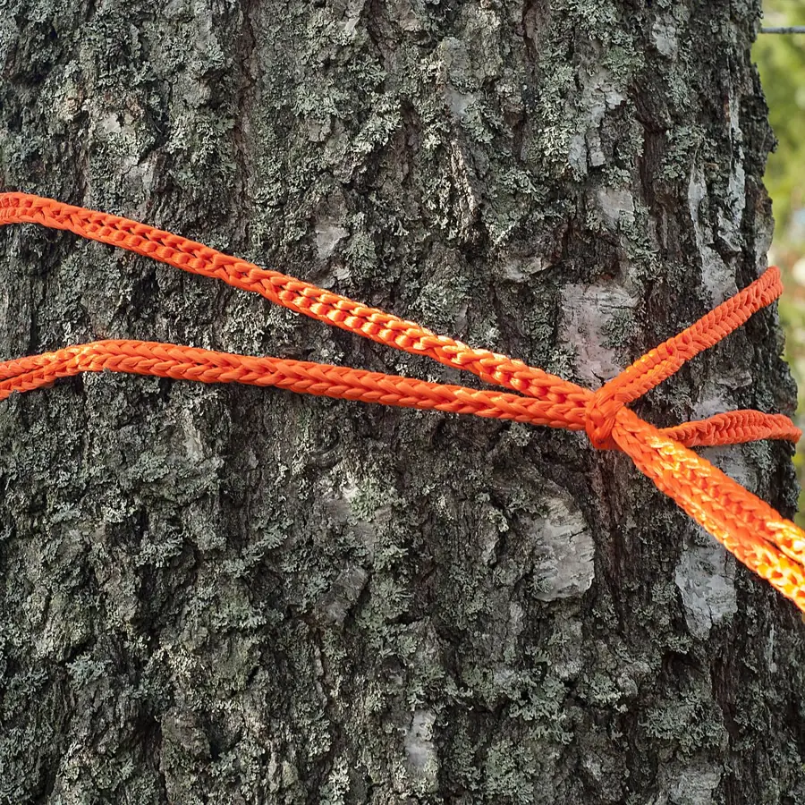
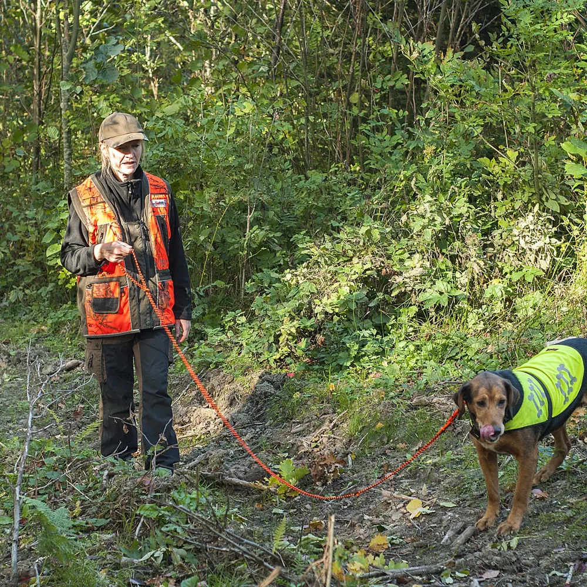
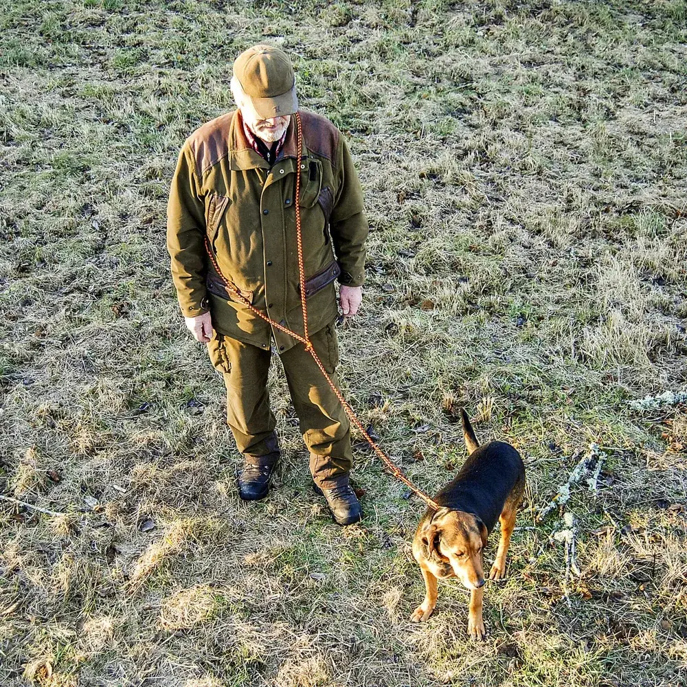

Which locks

A rope that drags game without slipping, joins to a second rope when the ground is heavy, turns into a body loop for pulling, and leads the dog with a leash that makes no noise. Fluorescent orange, seen in the undergrowth.
The No 16 is the hunting rope. A running loop around the legs of the animal tightens as you pull and opens when you stop. Make a fixed loop for the hand, or a large loop around the upper body and pull with your weight, hands free. Two ropes joined loop to loop pull harder or reach the quad on the track.
The hunting leash is one piece of RunLock: no chain, no clip, nothing that rattles. The neck loop is a running loop with a stop, so it tightens only as far as you set it, and the handle opens into a body loop so both hands are free for the rifle. When the season is over, both go in the washing machine.
The rope also hangs the game, ties the stand to the tree, secures the load on the quad and holds the tarp over the camp.


 Running loop
Running loop Fixed loop
Fixed loop